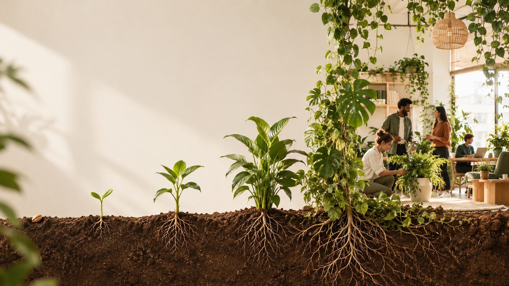

QVT · RSE · Vivant en entreprise
Cultivons ensemble des entreprises plus vivantes.
Nous aidons les entreprises à améliorer durablement la qualité de vie au travail en faisant entrer le vivant dans leurs espaces, à travers une démarche participative.
Le vivant ne s'installe pas.
Il se cultive.
Chez Cool As Cucumber, chaque pot posé est le début d'une transformation progressive et durable de vos espaces de travail, portée par une méthode rigoureuse et participative.
Les plantes ont des bénéfices reconnus sur le bien-être, la perception des espaces et le stress — mais cet impact est décuplé lorsqu'elles deviennent un projet collectif.
Notre rôle n'est donc pas d'installer des plantes. Notre rôle est de créer une dynamique durable autour du vivant.
Un bien-être durable
Une dynamique collective
Des espaces plus vivants

Ce qui nous différencie
Nous construisons avec les équipes une dynamique qui s'installe progressivement, jusqu'à devenir autonome.
Deux ans après notre passage, le projet doit être encore vivant.
Ce que ça change
Le vivant, au quotidien.
Pas une décoration de plus. Des espaces plus agréables, des occasions de faire ensemble et des pratiques RSE qui prennent réellement place dans le quotidien.
Des espaces où l'on se sent mieux
Plus agréables à vivre et à regarder, les espaces végétalisés participent à une ambiance de travail plus apaisée.
Un prétexte concret pour faire ensemble
Choisir, planter, entretenir, bouturer : le vivant crée des occasions simples de se parler, transmettre et prendre soin d'un projet commun.
Une RSE qui se pratique
Compost, récupération d'eau, bouturage, transmission des savoirs : les engagements deviennent visibles dans les gestes du quotidien.
Le parcours
Faire évoluer le projet dans le temps.
Le vivant s'installe progressivement. À chaque étape, les équipes gagnent en autonomie et le projet prend davantage de place dans le quotidien.
Graine
Premiers espaces plantés, premiers usages.
Jeune pousse
Les équipes s'approprient les gestes et les habitudes.
Arbre
Une dynamique collective se structure autour du vivant.
Écosystème
Le projet devient autonome et s'ancre dans la culture d'entreprise.
L'objectif n'est pas d'avoir plus de plantes, mais davantage de vivant.
Prêt à faire pousser votre QVT ?
Parlons de vos espaces, de vos équipes, et de la première graine à planter ensemble.